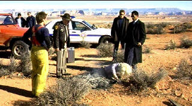

| Evolution (SE)/ C, B |
| Dreamworks/2001/102/ANA 1.85 |
Evolution is a spoof of cheesy science fiction movies in
black and white in the early fifties. It's never funny or outrageous enough.
The creative forces stop short of
letting the lid blow off and thereby undermine whatever potential for comic
success is inherent in the material. Maybe there isn't much at that.
When a giant object crashes to the earth in the
Arizona desert, a couple of college professors arrive on the scene to
investigate and bluff their way through the police lines. You probably
guessed already, it's an alien presence. Before the aliens can catch their
first clean breath of desert air, the military arrives on the scene to take
charge with a bull dog general and pretty chief scientist in the lead. The
profs have to battle the government guys to share in the discovery. But
there's more going on below ground than meets the eyes. At this point
someone should have called Ghostbusters.
 |
| Exercising authority dubiously. ©Dreamworks |
You got that right. Director Ivan Reitman 's been down this road before to much greater effect.
His Ghostbusters Pillsbury Doughboy towers over anything in
Evolution, especially the limply massive alien Jell-O mess that stands in for
the ultimate alien. When the Pillsbury Doughboy
explodes, it's a joyful glob of inspired nuttiness. When Evolution's
alien gets the pump job before splattering over the desert, it isn't the least
bit delicious.
David Duchovny goes through the motions as Dr. Ira
Kane in a bland
stupor. Orlando Jones who plays colleague Harry Block tries to be outrageous and
he does overshadow Duchovny, but that doesn't say much in this
instance. It might surprise you, but Julianne Moore, who has made her reputation is
serious roles, displays thee best display of comic timing finding a source
of daffiness in her portrayal of scientist Dr. Allison Reed.
A film like Evolution really has to provide a lot of
belly laughs. Probably, the most naturally comic actor is Seann William
Scott, playing country club maintenance guy Wayne Grey. He's got a goofy presence. With some crisper scripting, Scott could
have provided those needed guffaws. The alien incarnations fall short of their potential to rock the
mirth meter. The military machine is not depicted with broad enough strokes; no,
they're not quite to taken seriously, but they are not funny either. Basically,
Evolution falls splat to earth.
Evolution looks very good, a typically sharp transfer from new
source material. Perhaps color saturation could have been goosed a little
bit. Blacks are deep enough and shadow detail is revealing with good depth. The DTS surround has ample range with good, deep base extension. The
fine surround effects are highlighted by outstanding flying monster
pans.
Packaged as a special edition, Evolution includes
a conversation with Reitman and stars Duchovny, Jones and Scott. A number of
deleted scenes are part of the package. There's storyboard comparisons and
more.
 Selections from the Feature
Archive include articles on Akira Kurosawa, Frank Darabont, Blonde Bimbos, Hollywood Street Gangs, or Vietnam: The Hollywood Pariah, and many more....
Selections from the Feature
Archive include articles on Akira Kurosawa, Frank Darabont, Blonde Bimbos, Hollywood Street Gangs, or Vietnam: The Hollywood Pariah, and many more....

Is North by Northwest Hollywood's definitive exploration of the nose? From
schnozzles to beezeers, film mavens make the most of the foremost. Click on
Mount Hitchcock for more.


The Movie Poster Archive include extensive poster images from the films of stars like Susan Hayward, Kirk Douglas, Katharine Hepburn and many more. Our featured star is Robert Mitchum

Starship Troopers/A-,A

A great, modern, war movie that skewers genre conventions. Director
Paul Verhoeven controls the Scifi flick with a perfect flight plan.

 The
Cinematheque is a cultural,
arts organization that programs year-round specialty film series at the
newly renovated, landmark 1922 Egyptian Theatre on
Hollywood Boulevard! The online site for Film
Comment Magazine includes all the information you need to know
about cinematic events sponsored by the Film Society of Lincoln Center.
The
Cinematheque is a cultural,
arts organization that programs year-round specialty film series at the
newly renovated, landmark 1922 Egyptian Theatre on
Hollywood Boulevard! The online site for Film
Comment Magazine includes all the information you need to know
about cinematic events sponsored by the Film Society of Lincoln Center.
. The
online site for Film Comment Magazine includes all the
information you need to know about cinematic events sponsored by the Film
Society of Lincoln Center.
The
online site for Film Comment Magazine includes all the
information you need to know about cinematic events sponsored by the Film
Society of Lincoln Center.
MRQE
Find reams of movie and DVD reviews at the Movie Review Query Engine,
a index of reviews appearing on the Internet.
 Sight
and Sound Magazine is the venerable voice of The British Film Institute. The
site includes articles and film reviews. A great resource in print and on
the Internet.
Sight
and Sound Magazine is the venerable voice of The British Film Institute. The
site includes articles and film reviews. A great resource in print and on
the Internet.